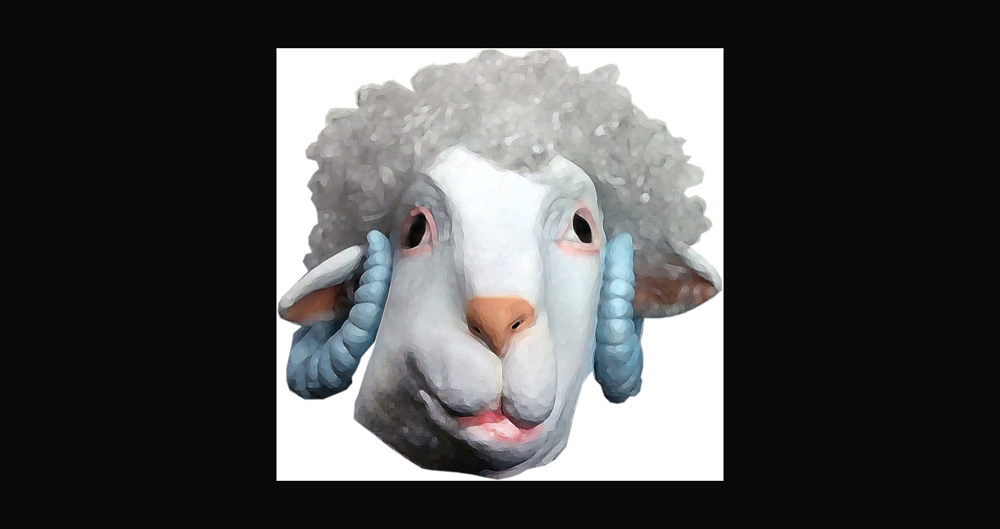
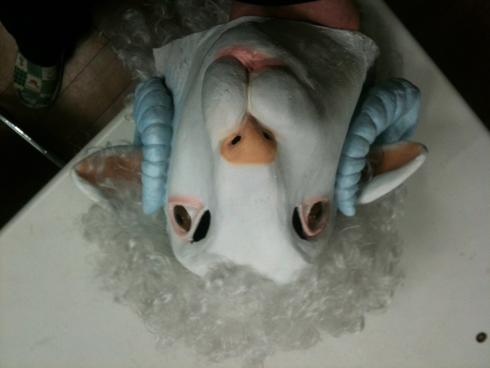
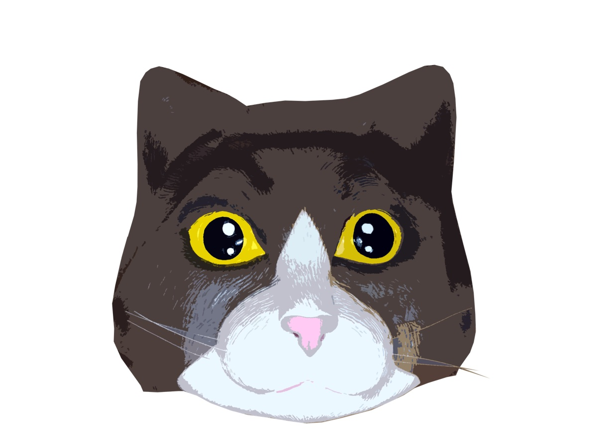
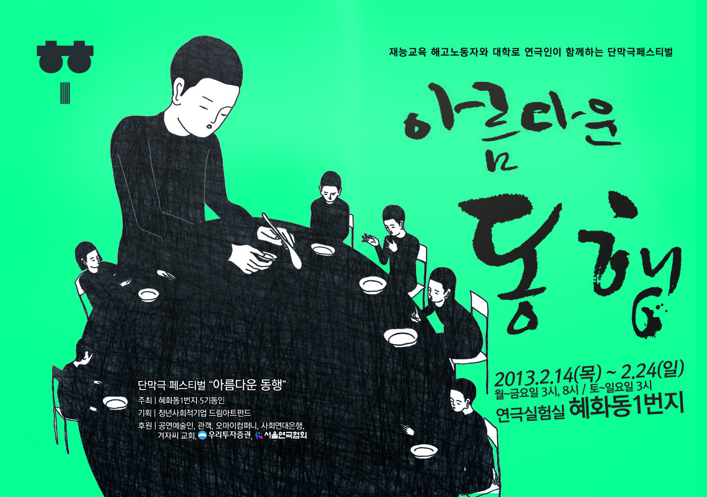

Performance — 2013
When You Open
the Killer’s Suitcase살인자의 수트케이스를 열면 · 아름다운 동행
어느 날부턴가 36살 먹은 여자는 수트케이스를 가지고 다닌다. 그 수트케이스를 가지고 다닌 뒤부터, 그녀는 노인이 되어버린다.
One day a woman of thirty-six begins carrying a suitcase. From the day she carries it, she becomes an old man.
노인은 수트케이스 안에서 허밍 소리나 심장 소리가 나면 ‘툭툭’ 건드려 수트케이스를 잠재웁니다. 그 안에는 자신이 살해한 소녀가 있기 때문입니다. 그리고 그 소녀는 바로 노인 자신이기도 합니다. 작품은 스스로를 살해하지 않고는 견디기 힘든 이 사회의 폭력성을 통해서, 특수고용노동자의 노동자성을 인정하지 않는 재능교육 사태에 대해 이야기합니다.
무대는 어느 회사의 사무실. 세 명의 여직원과 한 명의 노인이 사인일조가 되어 일하지만, 그곳에서 일하고 있음에도 모두 그곳에 없는 ‘투명인간’ 취급을 받습니다. 여직원들은 자신이 투명인간이 아님을 증명하려 하지만 그 시도는 부조리하게도 매번 실패하고, 모든 상황을 평온하게만 받아들이는 노인을 비난하다가 점점 동경하게 됩니다. 그의 평정심의 비법이 그가 늘 끌고 다니는 수트케이스 안에 있다고 믿으면서. 끝내 여직원들은 회사를 떠나고, 홀로 남은 노인이 수트케이스를 엽니다 — 그곳에서 숨겨진 그의 세계가 열립니다.
When a humming or a heartbeat sounds from inside, the old man taps the case — tap, tap — to put it back to sleep. Inside is the girl he killed; and the girl is also the old man himself. Through the violence of a society one can hardly endure without murdering oneself, the piece speaks of the JEI dispute — of ‘specially employed’ workers denied recognition as workers at all. The stage is an office: three women clerks and one old man work as a team of four, yet all are treated as invisible. The women try to prove they are not; absurdly, every attempt fails. They scorn the old man’s unbroken calm, then come to envy it — believing its secret lies in the suitcase he always drags behind him. In the end the women leave, and the old man, alone, opens the case: his hidden world unfolds.
- 작
- Written by
- 이여진 Lee Yeo-jin
- 연출
- Directed by
- 김제민 Kim Jae Min
- 출연
- Cast
- 김수정 · 이준규 · 김보라
- 조연출
- Assistant director
- 이수인
- 오퍼레이터
- Operators
- 김동민 · 심우섭
- 키워드
- Keywords
- invisible people · suitcase · grotesque · solidarity
맥락 — 혜화동 로터리의 이웃들
Context — neighbours at the Hyehwa rotary
연극인들의 「아름다운 동행」
The theatre-makers’ ‘Beautiful Companionship’
대학로에 본사를 둔 재능교육에서 해고된 학습지 교사 12명은 5년 넘게 거리의 천막에서 복직과 노동조합 활동 보장, 근로기준법상 노동자성 인정을 요구하며 농성하고 있었습니다. 한 명은 암 투병 중 세상을 떠났습니다. 같은 동네에서 활동하는 연극인들은 “계속 침묵하는 것은 불가능하다 — 재능교육 사태는 연극인의 문제가 되었다”는 선언과 함께, 일곱 팀의 작가·연출가가 참여하는 단막극 페스티벌을 열었습니다. 극장은 농성장에서 멀지 않은 연극실험실 혜화동1번지였습니다.
‘살인자의 수트케이스를 열면’은 그 다섯 번째 작품입니다. 함께 오른 작품은 한밤의 천막극장(오세혁 작·김한내 연출), 다시 오적(김은성 작·김수희 연출), 이건 노래가 아니래요(김슬기 작·부새롬 연출), 혜화동 로타리(김윤희 작·이양구 연출), 잉여인간·비밀친구 등 — 서로 다른 일곱 개의 시선이 하나의 사태를 둘러쌌습니다.
Twelve tutors dismissed by JEI — headquartered in Daehak-ro — had been camped in the street for over five years, demanding reinstatement, union rights and recognition as workers under the Labor Standards Act; one died of cancer during the struggle. The theatre-makers of the same neighbourhood declared that silence was no longer possible — ‘the JEI dispute has become a theatre-makers’ problem’ — and staged a festival of one-act plays by seven writer-director teams, at a theatre a short walk from the protest camp. ‘When You Open the Killer’s Suitcase’ was the fifth of the seven — seven different gazes surrounding a single dispute.
- 작가의 말 — 이여진
- Writer’s note — Lee Yeo-jin
- “아주 작은 일에도 다양한 선택의 스펙트럼이 열리는 시대가 왔다고들 한다. 하지만 그 선택권은 진정, 자유로운가? 평등한가? 누군가에게는 허락된 것만을 택하도록 압박하는 이 부조리한 사회 속에서, 때론 본연의 자신을 살해하고 유기해야만 하는 사람들의 절박한 순간들도 있다. 이 작품은 그들의 수트케이스를 열어 보이고 싶은 마음에서 시작했다.”
- “They say we live in an age where even the smallest thing opens a spectrum of choices. But is that choice truly free? Equal? In an absurd society that presses some people to choose only what they are permitted, there are desperate moments when one must murder and abandon one’s own self. This piece began from the wish to open their suitcases.”
연출노트 — 김제민
Director’s note — Kim Jae Min
노동자가 노동자가 아닌 세상
A world where workers are not workers
“‘이 이야기를 할 수 있을까?’ 처음에 참여하는 것을 많이 망설였습니다. 작업하는 내내 느끼고, 공감하고, 이해하고, 알아가는 시간이었습니다. 근로기준법상 노동자와 노조법상 노동자의 차이도 알게 됐습니다. 노동자가 노동자가 아닌 세상은 비상식적이다 못해 그로테스크하게 느껴졌습니다.
자본의 폭력에 그 억울함을 삼켜야 하는 노동자들은 점점 투명인간이 되어갑니다. 노동자를 노동자로 보지 않는 세상에서, 어쩌면 스스로를 죽이지 않고는 견딜 수 없을 만큼 부조리한 세상을 살고 있는지 모르겠습니다.”
“‘Can I tell this story?’ — at first I hesitated to take part at all. The whole process was a time of feeling, sympathising, understanding, learning; I came to know the difference between a worker under the Labor Standards Act and one under the union law. A world where a worker is not a worker felt beyond absurd — grotesque. Workers who must swallow their grievance before the violence of capital become, little by little, invisible. In a world that refuses to see workers as workers, perhaps we live in an absurdity one cannot endure without killing oneself.”
- 연습실에서
- From the rehearsal room
- 노인은 살인 이후, 여자1·2는 살인 이전의 상태다. 여자들은 종이학을 접듯이 계속해서 희망을 접는다 — 하지만 그 희망은 고문일 따름이다. 이 작품의 비극성은 희망을 단지 고문으로 인도한다.
- The old man is the state after the killing; the two women, the state before. The women keep folding hope like paper cranes — but that hope is only torture. The tragedy of the piece leads hope to torture.
- 사실주의로 읽으니 감정이 쌓여 반전이 보이지 않았다 — 그로테스크하게 읽을 것. 다만 그로테스크함이 심각해지는 것으로 받아들여지면 안 된다. 상징은 심장소리와 허밍. 노인은 빨간 랍스타를 먹는다.
- Read realistically, emotion piled up and the turn disappeared — read it grotesque. But the grotesque must never curdle into solemnity. The symbols: a heartbeat, a humming. The old man eats a red lobster.
기록 — 연극실험실 혜화동1번지, 2013. 2.
Record — Theater Laboratory Hyehwa-dong 1st, Feb 2013


